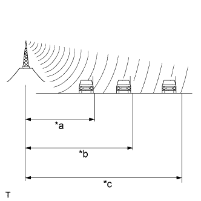
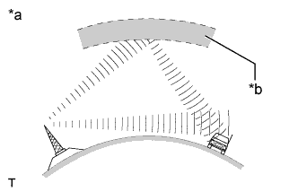
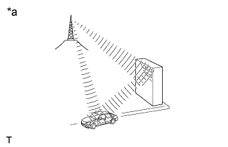

АУДИОВИЗУАЛЬНАЯ СИСТЕМА (для моделей без системы навигации) > ОПИСАНИЕ СИСТЕМЫ |
| ОПИСАНИЕ ПРОИГРЫВАТЕЛЯ КОМПАКТ-ДИСКОВ |
Проигрыватель компакт-дисков использует лазерный датчик для считывания цифровых сигналов, записанных на компакт-диске (CD). Он воиспроизводит музыкальные и другие записи посредством преобразования цифровых сигналов в аналоговые.
Поддерживаемые форматы компакт-дисков
Проигрыватель компакт-дисков поддерживает музыкальные компакт-диски, CD-R (записываемый компакт-диск) и CD-RW (перезаписываемый компакт-диск), обозначения которых приводятся ниже.

Меры предосторожности по работе с дисками
Чистка
 |
Если поверхность диска загрязнена, протрите диск мягкой тканью, например, салфетками для очистки очков с пластмассовыми окулярами, от центра к краю в радиальном направлении.
| ОПИСАНИЕ ФОРМАТОВ МР3 / WMA |
Поддерживаемый формат файлов MP3
| Поддерживаемый формат | MP3 (MPEG1 LAYER3, MPEG2 LSF LAYER 3) |
| Поддерживаемая частота дискретизации |
|
| Поддерживаемая скорость передачи двоичных данных |
|
| Поддерживаемые канальные режимы | Моно, стерео, квазистерео и двухканальный |
Поддерживаемый формат файлов WMA
| Поддерживаемый формат | Версия формата WMA 7, 8 и 9 |
| Поддерживаемая частота дискретизации | 32, 44,1, 48 (кГц) |
| Поддерживаемая скорость передачи двоичных данных |
|
Информация о тегах ID3 и WMA
Файлы МP3 имеют теги ID3, в которых хранится дополнительная текстовая информация. В них сохраняются названия песен и исполнителей.
Файлы WMA имеют теги WMA, в которых хранится дополнительная текстовая информация. В них сохраняются названия песен и исполнителей.
Поддерживаемый формат носителя
Для воспроизведения файлов MP3 / WMA могут использоваться только такие носители, как CD-ROM, CD-R (записываемый компакт-диск) и CD-RW (перезаписываемый компакт-диск).
Поддерживаемый формат носителя
Поддерживаемый формат носителя
| Формат компакт-дисков | CD-ROM Mode 1, CD-ROM XA Mode 2 Form1 |
| Формат файлов | ISO 9660 Level 1 и Level 2 (Joliet, Romeo) |
Стандарты и ограничения
| Ограничение иерархии каталогов | 8 уровней |
| Ограничение количества символов в имени файла/каталога | 32 символа |
| Максимальное количество каталогов | 192 (включая пустые каталоги, корневые каталоги и каталоги, не содержащие MP3/WMA-файлы) |
| Максимальное количество файлов на диске | 255 (включая файлы формата, отличного от MP3/WMA) |
Имена файлов
Распознаются и воспроизводятся как файлы MP3 или WMA только файлы с расширением ".mp3" или ".wma".
Файлы MP3 или WMA должны быть сохранены с расширением ".mp3" или ".wma".
| ОПИСАНИЕ AVC-LAN |
Что такое AVC-LAN?

Назначение:
Автомобильные аудиосистемы стремительно развивались в последнее время, и количество их функций значительно возросло. Стандартная автомобильная акустическая система интегрирована с мультимедийными интерфейсами наподобие интерфейсов, используемых в навигационных системах. В то же время потребители предъявляют более высокие требования к качеству аудиосистем. Это простой обзор процесса стандартизации. Особые цели AVC-LAN приведены ниже:
Разрешить проблемы звучания и другие проблемы, связанные с применением устройств от различных производителей, посредством стандартизации сигналов.
Позволить каждому производителю сконцентрироваться на разработке их наилучшей продукции. При выполнении данных условий можно производить высококачественные изделия по доступной цене.
| ОПИСАНИЕ СИСТЕМЫ ПЕРЕДАЧИ ДАННЫХ |
Компоненты аудиосистемы обмениваются данными друг с другом посредством AVC-LAN.
Ведущим устройством в сети AVC-LAN является радиоприемник в сборе с резистором 60-80 Ом. Резистор имеет огромное значение для поддержания обмена данными.
При возникновении короткого замыкания или обрыва в цепи AVC-LAN нарушается обмен данными и аудиосистема перестанет работать.
| ОПИСАНИЕ ФУНКЦИИ ДИАГНОСТИКИ |
Аудиосистема снабжена функцией диагностики (результаты отображаются на ведущем устройстве).
Каждому устройству сети AVC-LAN присваивается трехзначный шестнадцатеричный код устройства (физический адрес). Устройство отображается во время диагностики посредством данного кода.
| ОПИСАНИЕ ТЕХНОЛОГИИ BLUETOOTH |
| *A | для моделей со вспомогательным индикатором | *B | для моделей без вспомогательного индикатора |
| *a | Портативный аудиоплеер с поддержкой технологии "Bluetooth" | *b | Мобильный телефон с поддержкой технологии "Bluetooth" |
| *c | Радиоприемник в сборе (со встроенной приемной антенной "Bluetooth") | *d | Вышка мобильной связи |
"Bluetooth" является зарегистрированной торговой маркой Bluetooth SIG. Inc.
Bluetooth является новой технологией беспроводной передачи данных в диапазоне 2,4 ГГц. Данная технология позволяет подключить мобильный телефон (поддерживающий технологию Bluetooth*) к радиоприемнику в сборе (со встроенной системой Bluetooth) и использовать громкую связь, когда мобильный телефон находится в кармане или сумке. В результате отпадает необходимость подключать мобильный телефон к радиоприемнику в сборе.
Функция воспроизведения аудиозаписей с использованием технологии "Bluetooth"
Между приемником системы навигации со встроенной системой "Bluetooth" и портативным аудиоплеером с поддержкой "Bluetooth"* может быть установлено беспроводное соединение на основе технологии "Bluetooth". Это позволяет прослушивать файлы, сохраненные в портативном аудиоплеере, через динамики автомобиля. Кроме того, непосредственно с приемника системы навигации в сборе можно выполнять такие операции, как начало/остановка воспроизведения.
*: Некоторые модели аудиоплееров с поддержкой "Bluetooth" могут оказаться несовместимыми с системой "Bluetooth" автомобиля, либо записанная на них музыка будет воспроизводиться, но возможности управления с использованием приемника системы навигации окажутся ограниченными.
Совместимые аудиоустройства с поддержкой "Bluetooth"
| Технические характеристики "Bluetooth" | Версия 1.1 или выше (рекомендуется Версия 2.0 + EDR или выше) |
| Профили |
|
| Максимальное количество аудиоустройств, которые могут быть зарегистрированы | 2 |
| РАДИОВЕЩАНИЕ |
Радиочастотный диапазон
Радиовещание осуществляется в радиочастотном диапазоне, приведенном в таблице ниже.
|  |
Зона обслуживания
Размер зон обслуживания при приеме сигналов радиовещания в диапазонах AM и FМ значительно отличается. Иногда прием стереофонических сигналов вещания в диапазоне FM невозможен, тогда как сигналы AM принимаются без помех. Стереофоническое вещание в диапазоне FM имеет не только самую малую зону обслуживания, но также в наибольшей степени подвержено статическим и прочим помехам ("шумам").
| *a | FM (стерео) |
| *b | FМ (моно) |
| *c | AM |
Проблемы при приеме радиосигналов
|  |
Интерференция
Помимо электрических помех, радиовещание в диапазоне AM подвержено воздействию других видов помех, называемых интерференцией. Возникая только ночью, интерференция является видом помех, когда радиоприемник принимает 2 радиосигнала от одного передатчика. Один радиосигнал отражается от ионосферы, а другой принимается непосредственно от передатчика.
| *a | Интерференция |
| *b | Ионосфера |
|  |
Многолучевое распространение
Многолучевое распространение является типом помех, когда радиоприемник принимает 2 радиосигнала от одного передатчика. Один радиосигнал отражается от зданий или гор, а другой принимается непосредственно от передатчика.
| *a | Многолучевое распространение |
 |
Затухание
Затухание имеет место при прохождении радиосигнала через различные объекты (здания, горы и другие препятствия), которые отражают часть сигнала, что приводит к ослабеванию радиосигнала при нахождении какого-либо объекта между передатчиком и радиоприемником. Высокочастотные радиоволны, к которым относится и вещание в диапазоне FM, легко отражается от каких-либо препятствий. Однако низкочастотные радиоволны, к которым относится и вещание в диапазоне АM, практически не отражаются.
| *a | Затухание |
Помехи
Специалист должен иметь четкое представление о помехах, заявляемых каждым клиентом. Для диагностики помех пользуйтесь следующей таблицей.
| Радиочастотный диапазон | Условие возникновения помех | Возможная причина |
| AM | Помехи возникают в определенном месте | Посторонние помехи |
| AM | Помехи возникают при слабом приеме сигналов радиовещания | Одна и та же радиопередача может транслироваться с нескольких передатчиков, что приводит к интерференции сигналов |
| AM | Помехи возникают только ночью | Источник радиовещания находится на значительном расстоянии |
| FM | Помехи возникают в определенном месте | Многолучевое распространение или интерференция может привести к изменению частоты радиовещания в диапазоне FM |
| ОПИСАНИЕ ФУНКЦИИ USB АУДИОСИСТЕМЫ |
Переходник стереогнезда № 1 в сборе снабжен разъемом USB. Подключение USB-устройства или устройства "iPod" к переходнику стереогнезда № 1 в сборе позволяет воспроизводить хранящиеся в нем музыкальные файлы. При этом можно не только воспроизводить музыку с USB-устройства с функциями обработки звука, но и прослушивать сохраненные в USB-устройстве музыкальные файлы в формате MP3 или WMA. Кроме того, в системе установлено управляющее программное обеспечение для "iPod", которое дает возможность выбирать файлы из списков воспроизведения и работать в режиме воспроизведения в случайном порядке (shuffle mode).
Модели, совместимые с аудиосистемой с модулем USB
USB-устройства
Поддерживаются следующие типы устройств.
| Типы совместимых USB-устройств |
|
Устройства "iPod"
"iPod" является торговой маркой Apple Inc., зарегистрированной в США и других странах.
| Поддерживаемые модели "iPod" | Поддерживаемая версия прошивки |
| "iPod" 5G | Версия 1.2.0 или выше |
| "iPod Nano" 1G | Версия 1.2.0 или выше |
| "iPod Nano" 2G | Версия 1.1.2 или выше |
| "iPod Nano" 3G | Версия 1.0.0 или выше |
| "iPod touch" | Версия 1.1 или выше |
| "iPod classic" | Версия 1.0.0 или выше |
| Неподдерживаемые модели | "iPod shuffle" |
| "iPhone" | |
| "iPod" 1G, 2G, 3G, 4G | |
| "iPod mini" |
| ОПИСАНИЕ ФУНКЦИИ АВТОМАТИЧЕСКОЙ РЕГУЛИРОВКИ ЗВУКА (ASL) |
Функция ASL автоматически регулирует громкость звука, обеспечивая качественное звуковоспроизведение даже при увеличении уровня шума автомобиля (по мере возрастания скорости автомобиля увеличивается громкость звука и т.д.).
Для реализации функции ASL используются сигналы скорости автомобиля, поступающие от щитка приборов в сборе.